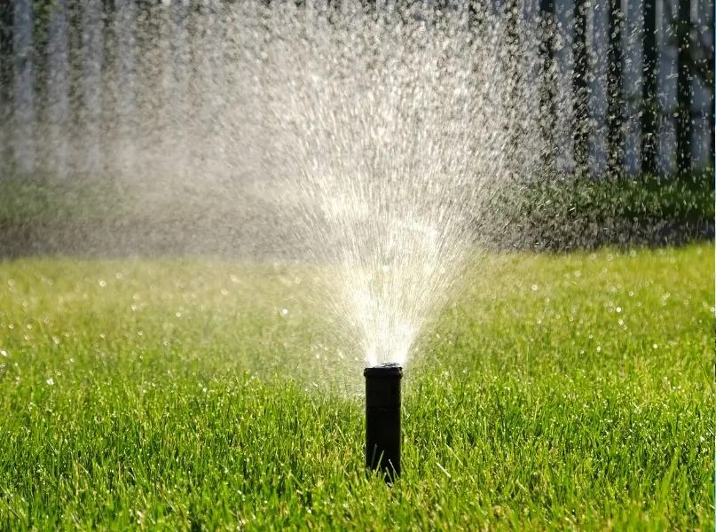
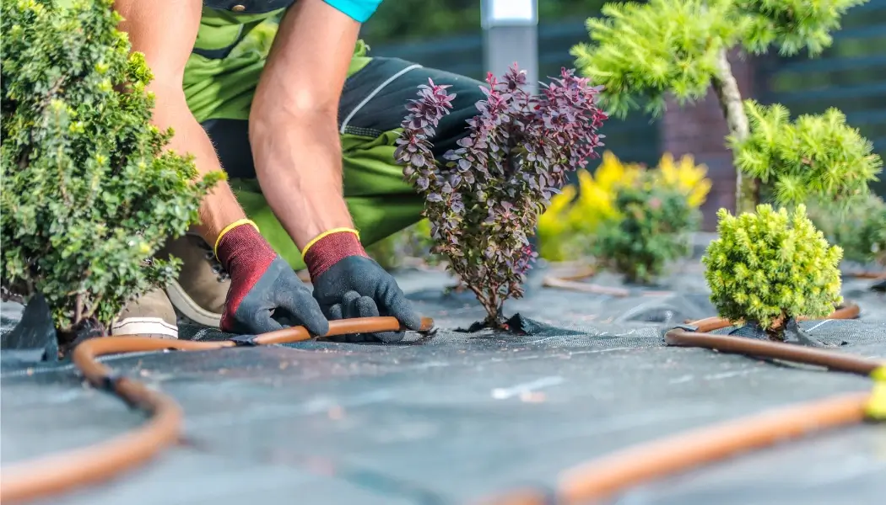
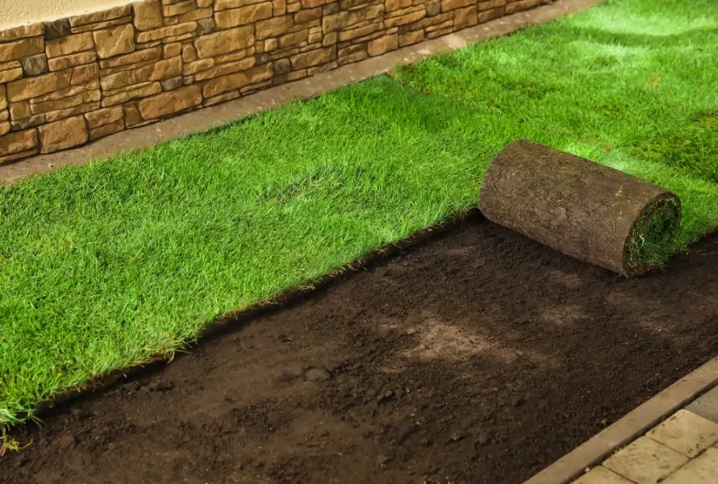
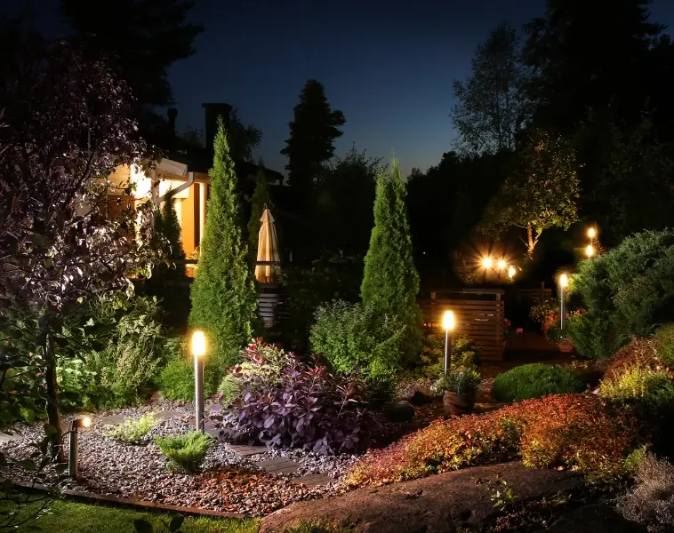

Praha · Beroun · Střední Čechy
Zahrada
v rovnováze.
Voda, která ví kam.
Zeleň, která žije.
Světlo, které tvoří atmosféru.
Navrhujeme a realizujeme zahradní systémy, díky kterým si zahradu prostě užijete.
VODA / AUTOMATICKÁ ZÁVLAHA
Správná kapka.
Správné místo.
Zahrada má svůj rytmus.
Závlaha mu rozumí.
Navrhneme systém Hunter podle vaší zahrady, zdroje vody a jednotlivých výsadeb. Trávník, záhony i živý plot dostanou vlastní péči.
- Trávník
- Výsuvné postřikovače
- Záhony a výsadby
- Kapková závlaha
- Ovládání
- Automatické řízení
- Po realizaci
- Sezónní servis

Méně času
s hadicí.
Více na zahradě.

ŽIVOT / TRÁVNÍKY A ZELEŇ
Dobrá zahrada
začíná
od země.
Místo pro bosé nohy.
A pro každodenní život.
Od přípravy půdy po založení trávníku. Pomůžeme vám vytvořit zelený základ zahrady a navázat péčí, která mu bude svědčit.
- Základ
- Příprava terénu
- Realizace
- Založení trávníku
- Návaznost
- Závlaha na míru
- Péče
- Podle potřeb zahrady

Zelená není
jen barva.
Je to pocit.
SVĚTLO / ZAHRADNÍ OSVĚTLENÍ
Den končí.
Zahrada
pokračuje.
Jiná atmosféra.
Stejné oblíbené místo.
Světlo vede po cestě, zvýrazní výsadbu a vytvoří prostor pro klidný večer. Navrhneme ho tak, aby zahradě slušelo i po setmění.
- Pohyb
- Cesty a vstupy
- Atmosféra
- Terasy a posezení
- Detail
- Stromy a výsadby
- Výsledek
- Světlo v souvislostech

JEDEN PARTNER PRO CELOU ZAHRADU
Od prvního nápadu
po další jaro.
Projdeme vaši zahradu
Probereme, co od zahrady čekáte, jak ji používáte a co potřebuje. Vycházíme z konkrétního místa, vody i vašich plánů.
Navrhneme řešení
Propojíme závlahu, zeleň nebo světlo do smysluplného celku. Rozsah prací a nabídku si projdeme před realizací.
Postaráme se o realizaci
Od přípravy až po uvedení do provozu. Ukážeme vám, jak se systém používá a jak se o něj průběžně starat.
Zůstaneme v kontaktu
Zahrada se mění s ročním obdobím. S navazujícím servisem, spuštěním závlahy a zazimováním nemusíte začínat pokaždé od nuly.
ZAČÍNÁ TO ROZHOVOREM
Co potřebuje
vaše zahrada?
Napište nám pár slov.
Společně najdeme další krok.
Praha · Beroun · Středočeský kraj
Košťálkova 1544, 266 01 Beroun